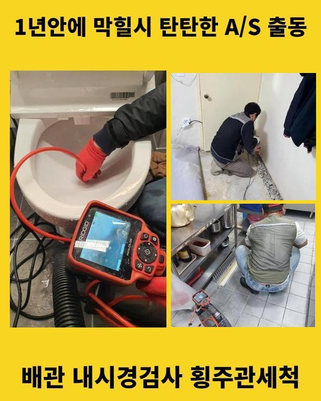
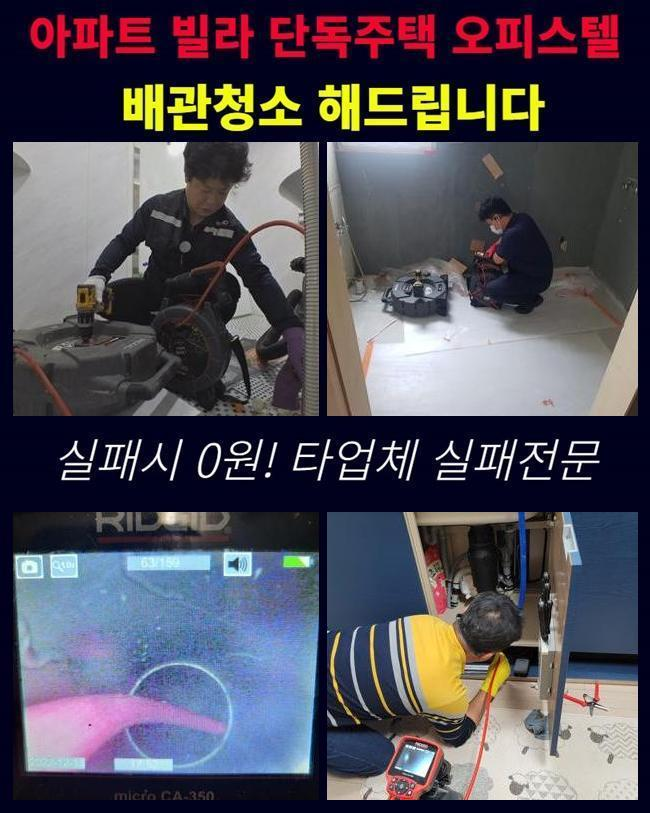
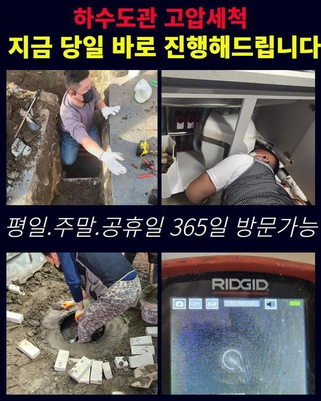
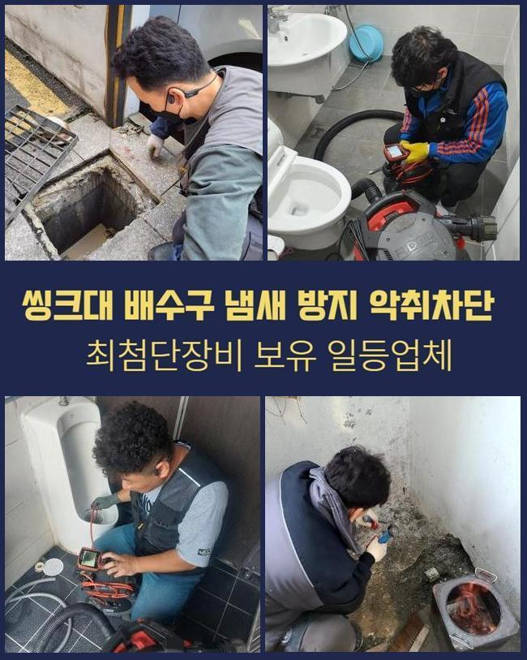
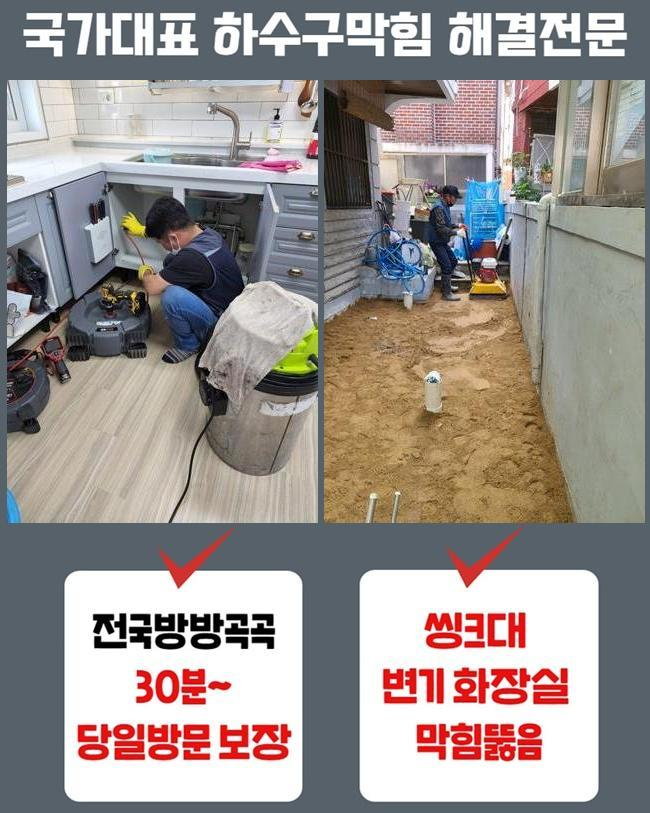
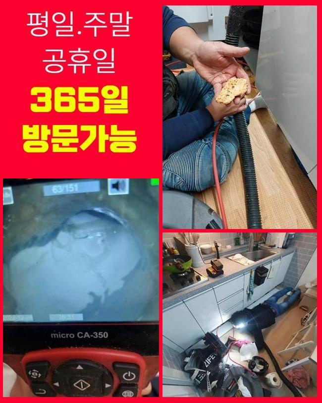
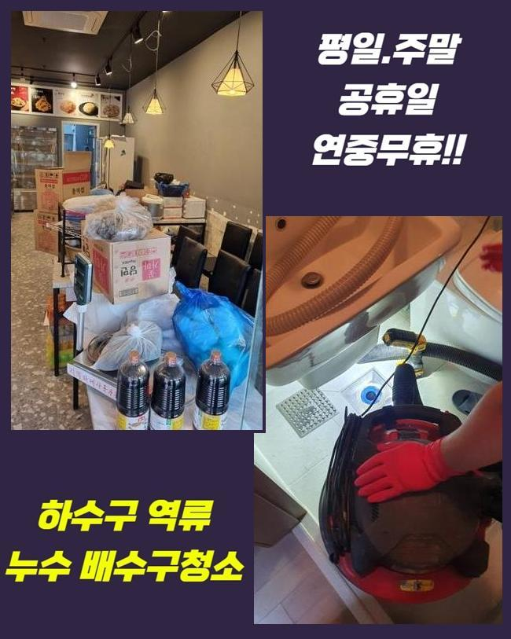

🏠 광주 회덕동싱크대배수구역류 퇴촌면 맨홀막힘 설비하는곳
광주 회덕동 싱크대막힘 전문 시공 후기

📋 작업 개요
- 위치: 광주 회덕동, 회덕동, 광주
- 서비스 유형: 싱크대막힘, 하수구막힘, 배관막힘, 맨홀막힘, 역류해결, 뚫는업체, 배관청소, 고압세척
- 작업 일시: 2025. 6. 2. 22:48
- 업체명: 하수구수사대 (010-5615-2118)
🔍 문제 상황
일상 생활을 하시면서 배수구 막힘현상은 빈번하게 발생하죠
한번쯤 샤워 후에 배수구에서 하수가 느려진 경우에 갑갑함을 느끼셨을 거예요
배수관이 꽉 막힌게 아니라면 어찌됐든 배수가 되긴 되므로 잠깐의 이상 상황이라고 생각하기 쉽습니다
특정한 오염원이 하수구를 아예 막고있는 상태가 아닌경우엔 사용하시다가 자연스럽게 녹으면서 배출이 되죠
광주 회덕동싱크대배수구역류 퇴촌면 맨홀막힘 설비하는곳
오늘 보실 현장은 고객분께서 배수구 막힘으로 다급하게 저희 전문진에게 도움을 요청하셨기 때문에 신속히 출동했어요
아파트의 샤워부수 하수구에서 하수관이 역류하는 현상이 반복된다고 하셨어요
욕조를 쓰면 하수가 역류해버리는 문제가 나타나고있어서 고객님께서 뚫어보시려고 작은 부품 등을 구매해서 진행 해보셨다고 했습니다
욕실 전용 청소용액이나 노폐물을 밀어내는 소형기기같은 상품을 여러분께서도 구입하실 수는 있죠
막힘증상을 발생시키는 이유를 모른채로 위험한 방식으로 시도하시면 더 막히게 될 수도 있으니 해당 문제를 처리할 수 있는 전문가를 찾아보시고 의뢰를 맡기시는게 중요해요
의뢰인분의 집에 들어가자마자 욕조의 배수구를 확인했습니다

🔎 원인 분석
💡 전문가 진단: 정밀 진단 장비를 사용하여 슬러지의 고착 여부를 판명하고 타격/세척 작업을 실시했습니다.
💡 전문가 진단: 정밀 진단 장비를 사용하여 슬러지의 고착 여부를 판명하고 타격/세척 작업을 실시했습니다.
💡 전문가 진단: 정밀 진단 장비를 사용하여 슬러지의 고착 여부를 판명하고 타격/세척 작업을 실시했습니다.
💡 전문가 진단: 정밀 진단 장비를 사용하여 슬러지의 고착 여부를 판명하고 타격/세척 작업을 실시했습니다.
💡 전문가 진단: 정밀 진단 장비를 사용하여 슬러지의 고착 여부를 판명하고 타격/세척 작업을 실시했습니다.
💡 전문가 진단: 정밀 진단 장비를 사용하여 슬러지의 고착 여부를 판명하고 타격/세척 작업을 실시했습니다.
수도를 개방하여 몇분정도 욕조의 하수관으로 흘려보내면서 봤더니 아예 꽉 막혀있는 상태였습니다
고객님의 욕조에 설비된 형태의 배수구는 구축 또는 신축이여도 아파트의 구조에서 볼 수 있는 특이점이예요
아파트의 하수구는 물길이 좁기때문에 머리카락과 같은 기타 불순물에도 자주 막힘증상이 생길 수도 있습니다
눈으로 살펴봐도 문제되는 오염물질이 보이지 않았으며 고객분께서도 생각날만한 일이 없다고 하셨으므로 전문적인 확인이 필요해 보였습니다
배수구의 라인이 복잡하므로 세월이 흐르면서 다양한 이유때문에 막힘사고가 발생하는 일이 많이 생깁니다
원인파악부터 하고자 석션기기를 이용해서 가득 찬물을 제거하는 작업에 들어갔습니다
석션장비는 흡입하는 원리로 이용되는 장비예요
오수뿐만 아니라 오염물질을 제거하기 위해 석션장치를 이용해요
물을 모두 제거하고 배수구로 내시경기를 투입했어요
하수관 속으로 내시경기를 넣고서 효과적으로 배수관 내부를 보는 것이 가능하므로 현장에 꼭 필요해요
최신장비를 갖고있으므로 저희 기술진은 소량의 오염물질도 체크가 가능하고 깨끗하게 처리한 후에 청소작업까지 진행해 드리고 있답니다
내시경기로 딱딱한 오염원이 배수관 내부에 굳은상태로 군집을 이룬것을 볼 수 있었어요

🔧 작업 과정
관경이 매우 좁아졌으므로 배수되는 배수관이 막히면서 배수관의 막힘사고가 일어나는 것으로 보였습니다
장기간동안 굳어지며 딱딱해진 슬러지를 제거하는 방법으로 일단 장비만 활용하는 것보다 석회부터 유연하게 녹일 수 있도록 전문약제를 씁니다
인체에 위험성이 없는 적은 독성의 안전한 약제만 이용하므로 사용에 대한 걱정등은 하실 필요 없습니다
전용세제를 배관에 쏟아넣고 슬러지가 어느정도 녹는 시간까지 기다렸어요
이물질을 어느정도 녹이는 과정들 없이 곧장 파쇄하는 시공을 과도하게 시작하면 배수관 손상으로 번질 수도 있으므로 주의하셔야 합니다
전문약제를 투입하고 30분정도 방치한 후에 분쇄작업과 배수관 청소를 시작했어요
샤프트기계로 딱딱한 오염원을 파쇄하는 과정을 반복해요
샤프트기는 불순물을 파쇄하는 기기로 사슬 형태의 전용헤드가 배수관 안쪽에서 회전하며 침전물을 제거합니다
분쇄하지 않을때도 오염원을 갈고리처럼 꽂아서 끄집어내는 방식으로 쓸 때도 많습니다
유연해진 이물질은 힘들지않게 파쇄 되었고 조각난 이물질은 그냥 처리하기 위해 석션기계를 이용해서 이물질을 배출 시켰습니다
1차적인 작업 후에 내시경기기를 사용하여 하수구를 확인했습니다
아까전에 본 상태와 비교해보니 배관 속이 깔끔해졌고 그 외 노폐물이 배수관을 막는등의 상황은 보이지 않았습니다
하수관이 완전히 뚫린 상황도 아니고 하수관의 앞쪽 부분에 슬러지가 여러개의 군집을 형성하여 배수구 막힘이 자주 발생한 것 같았습니다
반복해서 샤프트장치를 활용하여 파쇄를 이어나갔고 소량의 머리카락까지 파쇄하여 깨끗하게 작업을 마무리 했습니다
석션장치가 오염물질을 빨아들이는 진동이 없었기때문에 샤프트작업을 마무리 지었습니다
최종적으로 내시경기계를 이용해서 배관의 내부를 확인합니다
처음보다 배관이 깔끔해진걸 체크하고 하수구 안쪽에 약간씩 잔여해있던 침전물이 완전히 제거되었습니다
배수관의 입구 부위에 형성된 슬러지 군집이 배수구 막힘의 중요한 이유였지만 입구 부분만을 작업을 이어나갔다면 같은 증상이 재발할 수 있는 가능성이 높습니다
눈으로 알기어려운 내부의 문제까지 정밀하게 검사하고 시공해야 저희 업체의 수리가 종료 될 수 있어요


✅ 작업 완료
통수검사를 이어나가면서 고객분께서 확인 시켜드려요
욕조쪽과 세면대의 배수구에 다량의 물을 내려보내면서 배수가 원활한지 확인해보면서 거듭해서 통수작업을 시행합니다
배수의 속도도 빠르고 깨끗해진 하수구의 내부까지 확인했어요
주방이나 욕실처럼 평소에 물을 사용하게 되는 장소는 배수구가 역류하는 현상들이 쉽게 일어나요
시공은 작업에 들어가기에 앞서 증상의 원인들을 확인하는 것이 필수적이며 전문기술과 장비로 작업을 하고 완벽하게 검사까지 진행해주는 전문가에게 진행하셔야 합니다




⚠️ 주방 싱크대 배관 막힘 예방 수칙
- ✅ 기름기가 묻은 식기나 프라이팬은 설거지 전 키친타올로 반드시 기름때를 닦아내세요.
- ✅ 주기적으로 싱크대 개수대에 뜨거운 물을 가득 받아 한 번에 내려 배관 내부 기름을 씻어내세요.
- ✅ 배수구 거름망을 미세한 필터로 사용하시고 음식물 찌꺼기가 틈으로 새어 들지 않게 관리하세요.
- ✅ 베이킹소다와 식초를 뜨거운 물과 함께 일주일에 한 번씩 부어주면 배관 살균과 막힘 예방에 좋습니다.
💡 핵심 정리
- 확실한 장비 작업(내시경 점검 및 샤프트 스케일링)으로 원인을 뿌리 뽑습니다.
- 작업 후 1년 이내에 동일한 부위 재발 시 100% 무상 A/S 서비스를 보장합니다.
- 서울 · 경기 · 인천 전 지역에 24시간 언제든 긴급 출동할 수 있도록 항시 대기 중입니다.
❓ 자주 묻는 질문 (FAQ)
🚨 광주 회덕동 싱크대막힘 문제로 고민이신가요?
정확한 원인 진단과 확실한 시공으로 재발 없는 해결을 약속드립니다.
24시간 긴급 출동 | 서울 · 경기 · 인천 전지역 | 1년 내 재발 시 무상 A/S